Начальные группы
Каратэ для детей с 3 лет, подростков, юношей и девушек.
Дети от 3 летПодростки

Ташкентская городская федерация каратэ-до. Тренировки для детей с 3 лет, подростков и взрослых.
Начальные и продвинутые группы, занятия для взрослых и женская самооборона.
Каратэ для детей с 3 лет, подростков, юношей и девушек.
Техника, аттестации на пояса, соревнования и развитие мастерства.
Занятия для взрослых — физическая форма и регулярная практика.
Отдельное направление федерации для женщин и девочек.
Координация, здоровье, сила духа и команда — ценности, которые федерация развивает в каждом ученике.
Динамические упражнения развивают ловкость, скорость и реакцию, повышают концентрацию внимания.
На занятиях укрепляется тело, улучшается работа сердечно-сосудистой и дыхательной систем.
Каратэ развивает ответственность, уверенность и целеустремлённость.
Направленная физическая нагрузка поддерживает сон, аппетит и общее самочувствие.
Каратэ задействует все группы мышц, развивает силу, ловкость, гибкость и выносливость.
Самодисциплина, уважение к другим и надёжные друзья в своей команде.
Опыт, личный пример и внимание к прогрессу каждого ученика.
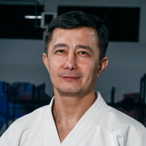
01Многократный Чемпион Мира, Азии, Республики Основатель федерации
Школа №221, улица Феруза, Мирзо-Улугбекский район
Бывш.Консерватория, пр-т Мустакиллик, м. Х.Олимжона
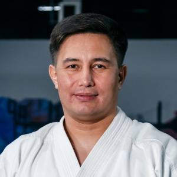
02Многократный призер Чемпионатов Мира, многократный Чемпион Республики
Школа №279, м-в ХУМОЮН, 17, Район: Мирзо-Улугбекский
Ташкентский профессиональный колледж геодезии и картографии, пр-т Мирзо-Улугбека,82, Мирзо-Улугбекский район
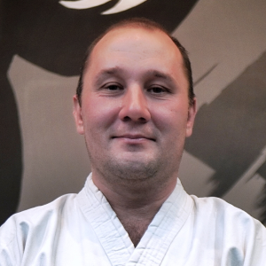
03Многократный Чемпион Республики, Призер Чемпионата Мира
Школа №111, ул. Фаробий, д. 270, Алмазарский район
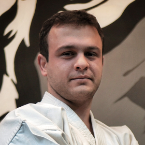
04Чемпион Азии и Республики, Призер Чемпионата Мира
Школа №256, массив Ахмад- Югнакий, Мирзо-Улугбекский район
Школа №120, массив Ахмад- Югнакий, Мирзо-Улугбекский район
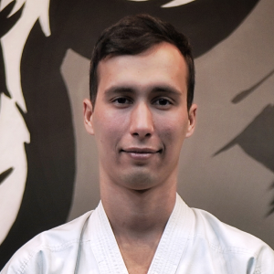
05Чемпион Мира и Республики
Техникум Узгидрометеорологии, ул. Тахтапул 45, Шайхонтохурский район
Школа №317, Сергели 7, махалля Зийнат
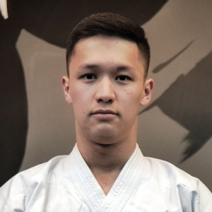
06Чемпион Мира и Республики
Школа №142, Мирзо-Улугбекский район, ориентир: кафе "Подушечная"
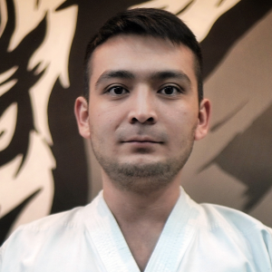
07Чемпион Мира, Азии
Школа №66 ,Чиланзарский район 1 квартал
Школа №223, улица Феруза, Мирзо -Улугбекский район
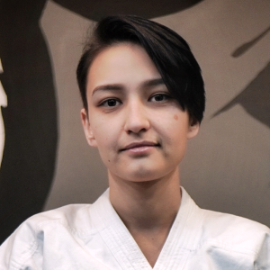
08Чемпион Мира, Азии, Республики
Школа №83, ул. Ок Йул 68, Мирабадский район
Мирабадский район, улица фидокор 23, 60-школа. Ориентир Метро Айбек.
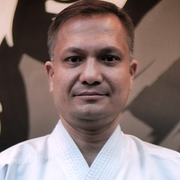
09Тренер федерации
Школа №263, Куйлюк - 3, Мирабадский район.
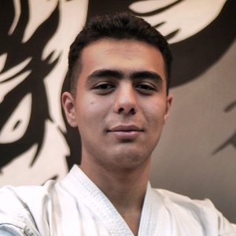
10Чемпион Мира, Азии, Республики
Школа 64, ул Узбекистон Овози 35А, Мирзо-улугбекский район (ориентир Экопарк)
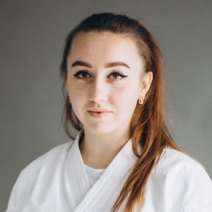
11Призер Чемпионата Мира
Школа №50, улица Истиклол д.8, Мирзо-Улугбекский район
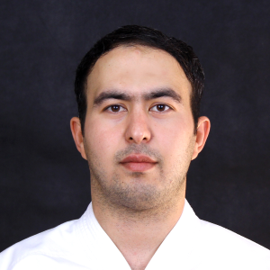
12Чемпион Мира
Школа №263, Куйлюк - 3, Мирабадский район
Школа №158, улица Таллимаржон, дом16, Мирабадский район
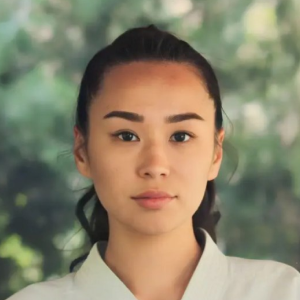
13Чемпион Республики, Призер Чемпионата Мира
Школа №319, Кушбеги 24 А, Яккасарайский район
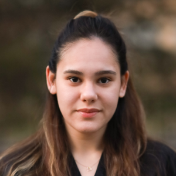
14Чемпион Мира
Школа 210, ТТЗ 1, Мирзо-Улугбекский район
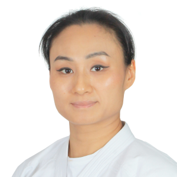
15Чемпион Мира
Спорткомплекс Локомотив, Мирабадский район, ориентир: Азербайджанский центр
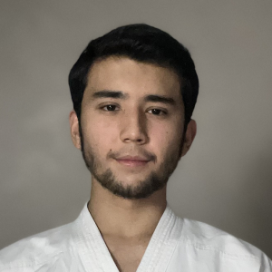
16Многократный призер чемпионатов мира и Азии
Ташкентский государственный экономический университет, Чиланзарский район, ориентир: Magic City
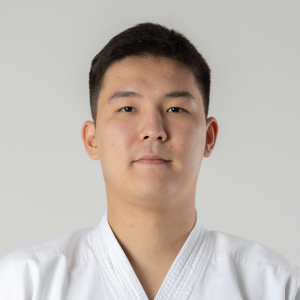
17Призер Азии, Чемпион Республики
Школа №319, Кушбеги 24 А, Ориентир мемориал "БРАТСКИЕ МОГИЛЫ"
Адреса школ каждого тренера раскрываются по нажатию — выберите удобное расположение.
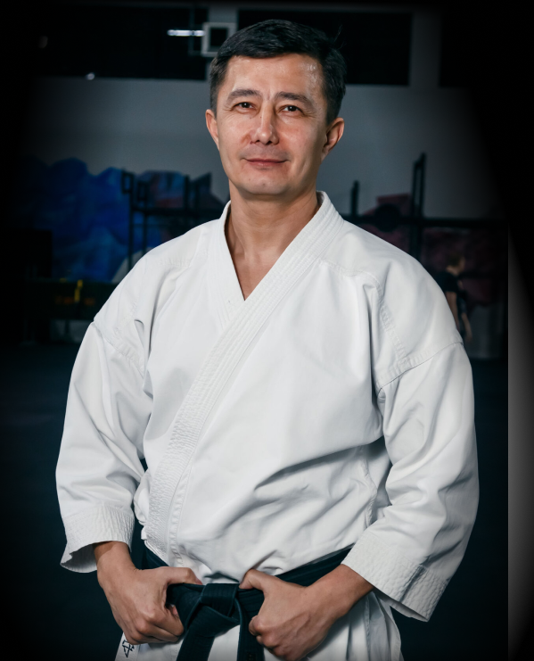
Ташкентская городская федерация каратэ-до основана и официально зарегистрирована в 2003 году. Сегодня федерация объединяет школы, тренеров, учеников и выпускников.
Федерация участвует в чемпионатах Республики Узбекистан и международных турнирах.
Команда из 8 спортсменов: 4 золотые, 3 серебряные и 6 бронзовых медалей.
17 спортсменов завоевали 23 медали.
17 спортсменов завоевали 13 медалей.
30 спортсменов завоевали 36 медалей.
27 спортсменов завоевали 41 медаль.
25 спортсменов завоевали 29 медалей.
41 спортсмен завоевал 30 медалей.
В выступлениях федерации также были семинары с японскими мастерами, аттестации, городские мероприятия и телевизионные программы.
Сборная г.Ташкента ежегодно занимает первое место на чемпионатах Республики Узбекистан по Фудокан каратэ-до и другим стилям. За последние годы проведены мастер-классы тремя японскими мастерами при поддержке Японской ассоциации по культурному сотрудничеству (JICA), проведена международная сертификация на черные пояса основателем стиля Фудокан; также федерация была удостоена чести принять мастера из Японии, сотрудничество с которым продлилось 2,5 года. В июне 2019 года проходил 6-дневный Международный Семинар по Фудокан Каратэ и Рюкю Кобудо Тэссинкан (данное направление впервые в нашей стране) с участием Мастеров из Беларуси, организованный нашей Федерацией. Также в этом году мы вошли в состав Международной Лиги Традиционный Боевых Искусств.
Сборную команду Федерации часто приглашают на показательные выступления городских мероприятий на площадках города. Помимо этого, на каналах узбекского телевидения на данный момент транслировались уже более 20 эфиров о нашей федерации, а также неоднократно публиковались статьи в печатных изданиях и выходил радиоэфир о нашей деятельности.
Наряду с изучением традиционного каратэ-до задачами федерации являются в приобщении детей к Пути физического и морального совершенствования, воспитание гармонично развитого поколения, укрепление взаимоотношей детей и родителей путем проведения совместных мероприятий (дети+родители), психолого-методическая работа с детьми, познания философских основ карате-до. Совместно с Родительским комитетом проводится большая просветительская деятельность на темы нравственных и культурных ценностей, тем самым применяется комплексная система развития Личности в каждом ученике.
Тренировки, соревнования, семинары и жизнь команды.
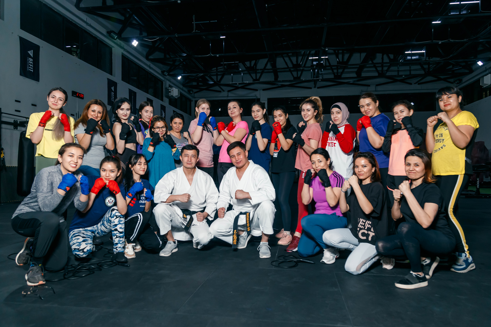
Рустам и Босит Бекмуратовы открыли курсы самообороны для женщин и девочек. Занятия организованы при поддержке Посольства США в Ташкенте.
Материал на Afisha.uz ↗Уточнить расположение школы, график занятий и другие вопросы можно по телефону.